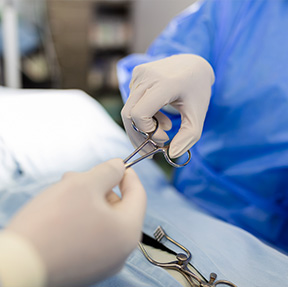

Çocuklarda Modern Sünnet ve Üroloji
Sünnet, sadece dini veya sosyal bir gelenek değil, aynı zamanda tıbbi bir cerrahi işlemdir. Adana'da Doç. Dr. İlknur Banlı Cesur, sünnet işlemini bir ameliyathane disiplini içerisinde, en az ağrı ve en iyi estetik sonuç odaklı olarak gerçekleştirmektedir. Çocuk cerrahı tarafından yapılan sünnet, olası riskleri minimize ederken çocuğun gelecekteki ürolojik sağlığını da korur.
Modern sünnet anlayışımızda, çocuğun psikolojik durumu en az tıbbi prosedür kadar önemlidir. Bebeklerde lokal anestezi ile yapılan sünnetler, büyük çocuklarda ise kısa süreli sedasyon (uyutma) eşliğinde gerçekleştirilen ağrısız yöntemler tercih edilir. Sünnet öncesi yapılan detaylı ürolojik muayene ile inmemiş testis veya hipospadias gibi ek sorunlar da saptanabilmektedir.
Sünnet Yöntemlerimiz ve Ürolojik Yaklaşım
Kliniğimizde uyguladığımız sünnet ve ürolojik takip süreçleri şunlardır:

- Yenidoğan Sünneti (İlk 28 gün)
- Lokal Anestezi ile Bebek Sünneti
- Sedasyon Altında Ağrısız Çocuk Sünneti
- Estetik DikiÅŸli Plastik Cerrahi Teknikleri
- Sünnet Hatalarının Düzeltilmesi (Revizyon)
- Gömük Penis Onarımı
Neden Çocuk Cerrahı Yapmalı?
Sünnet basit bir işlem gibi görünse de uzmanlık gerektirir.
- Ürostalojik anatomiyi en iyi bilen uzmandır
- Kanama ve enfeksiyon riski minimize edilir
- Eğrilik ve yapışıklık gibi sorunlar engellenir
- Psikolojik travma oluşmasının önüne geçilir
Ameliyat Sonrası Bakım
Modern sünnet sonrası iyileşme süreci oldukça hızlıdır.
- Genellikle 2-3 günde normal hayata dönüş
- Dikiş aldırma derdi olmayan yöntemler
- Özel ağrı kesici protokolleri
- 7/24 doktorunuza erişim imkanı
Geleceğin Sağlıklı Erkekleri İçin
Sünnet, bir erkeğin hayatındaki en önemli dönüm noktalarından biridir. Bu anıyı travmasız, sağlıklı ve estetik bir şekilde sonuçlandırmak bizim görevimizdir. Adana'da Doç. Dr. İlknur Banlı Cesur olarak, binlerce başarılı sünnet tecrübemizle, ailelerimize güvenli ve konforlu bir sünnet süreci vaat ediyoruz.
Tıbbi olarak her yaşta sünnet yapılabilir ancak en ideal dönemler yenidoğan dönemi (ilk ay) veya 2 yaş öncesi ile 6 yaş sonrasıdır. 2-6 yaş arası, çocukların psikoseksüel gelişimleri nedeniyle tıbbi zorunluluk olmadıkça sünnetin ertelenmesi önerilen bir dönemdir.
Yenidoğan ve ilk 3-6 aydaki bebeklerde lokal anestezi oldukça konforludur. Ancak hareketli ve korkusu olan daha büyük çocuklarda kısa süreli sedasyon (hafif uyutma) eşliğinde yapılan sünnet, hem cerrahi titizlik hem de çocuğun psikolojisi için çok daha üstündür.